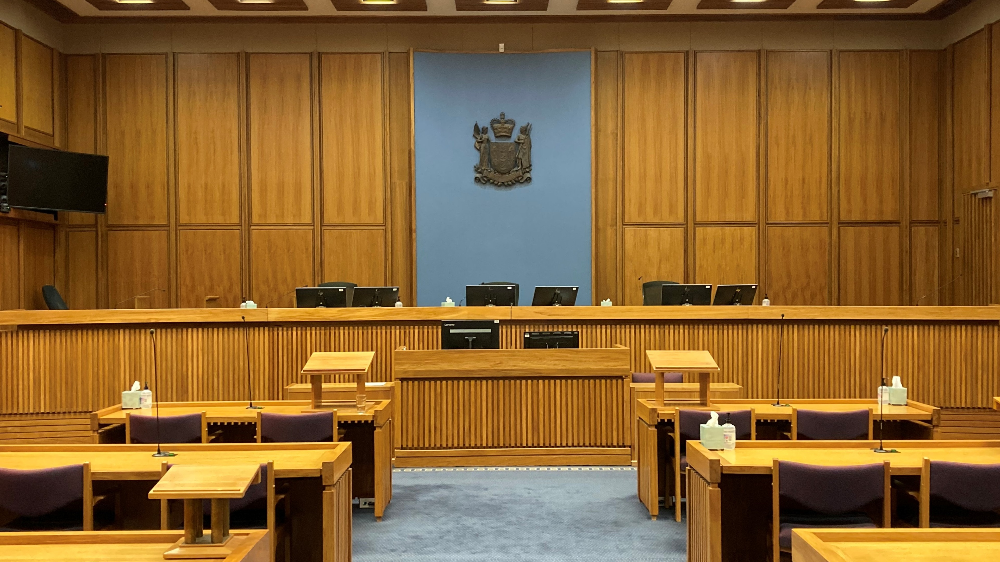

Commercial court appellate chamber where open-source intelligence exhibits and digital forensics affidavits undergo judicial admissibility scrutiny.In complex commercial disputes, international arbitrations, and cross-border fraud claims, litigation counsel frequently confront adversaries who utilize offshore secrecy jurisdictions, nominee directors, and deliberately fragmented digital footprints to obscure material facts and assets.
While open-source intelligence (OSINT) was once regarded as an informal research technique, contemporary dispute strategy requires a rigorous, forensically defensible methodology. Transforming publicly accessible web fragments, historical corporate registries, satellite telemetry, and social relationship graphs into court-admissible evidence demands strict evidentiary chain-of-custody protocols.
Table of Contents
1. Beyond Search Engines: The Forensic Architecture of Modern OSINT
Commercial litigation OSINT is fundamentally distinct from conventional internet searches. It involves systematic querying across specialized, multi-jurisdictional databases: gazette notices, maritime AIS vessel tracking, aircraft transponder archives (ADS-B), real property deeds, patent registers, and deep web archives.
Adversaries often attempt to sanitize digital trails upon the initiation of disputes. Forensic OSINT investigators capture historical snapshots, recover altered regulatory disclosures, and cross-index digital footprints across non-traditional platforms to reconstruct events with chronological exactitude.
Evidentiary Standard for Trial Teams
A screenshot is not evidence. Unverified digital grabs are routinely struck down in commercial courtrooms on authentication or hearsay grounds. Every digital exhibit must be captured with cryptographic hash signatures, RFC 3161 timestamps, and complete HTTP header records.
2. Cryptographic Evidence Preservation & Chain-of-Custody Integrity
Under Federal Rule of Evidence 902(13) and 902(14) in the United States—and equivalent common-law principles in the UK High Court and Singapore International Commercial Court—electronic evidence generated by an electronic process or system can be authenticated through written certification by a qualified forensic custodian.
Veritas Intelligence utilizes dedicated forensic capture workstations that archive digital material directly into standardized WARC (Web ARChive) containers, computing SHA-256 cryptographic hashes immediately upon intake. Third-party RFC 3161 cryptographic timestamp tokens are affixed to establish immutable proof that the data existed in an identical state at the precise second of capture.
3. Cross-Docket Disambiguation & Piercing Nominee Networks
Fraudulent actors deliberately employ common aliases, corporate formations with overlapping names, or professional nominees to defeat crude automated database searches. Our OSINT specialists employ link analysis and entity resolution algorithms to cross-reference corporate officers across disparate registers worldwide.
By correlating shared registered office addresses, legal agents, phone number prefixes, and corporate formation dates, we establish conclusive corporate alter-ego relationships that provide trial counsel with the factual predicate necessary to pierce the corporate veil.
4. Defeating Hearsay Challenges: FRE Rule 902(11) Self-Authenticating Records
The ultimate utility of commercial intelligence is measured by its performance during judicial examination. Our partners regularly author sworn expert affidavits and witness statements detailing our investigation tradecraft, search parameters, and chain-of-custody documentation.
By packaging raw OSINT findings into structured, indexed trial compendiums supported by custodian certifications under FRE 902(11), we ensure that critical evidence is admitted without the delay and expense of calling individual foreign registry clerks or web administrators to testify.
About Sophia Chen
Sophia specializes in complex digital evidentiary recovery, cross-border corporate intelligence, and OSINT tradecraft for major commercial litigation practices, arbitration boutiques, and multi-jurisdictional judgment creditors.